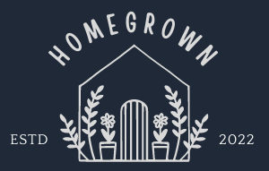
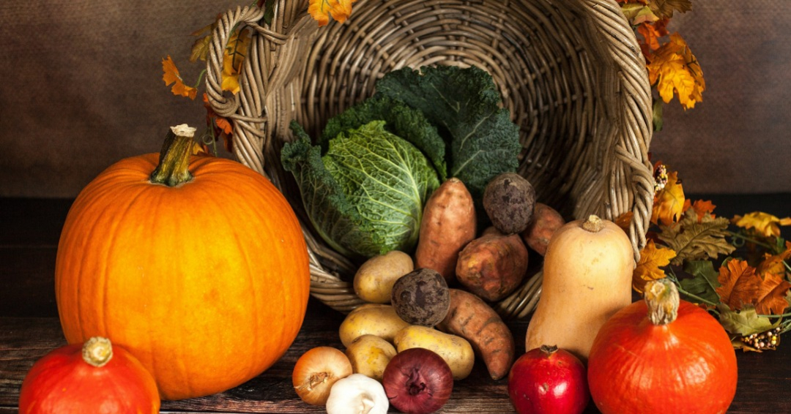
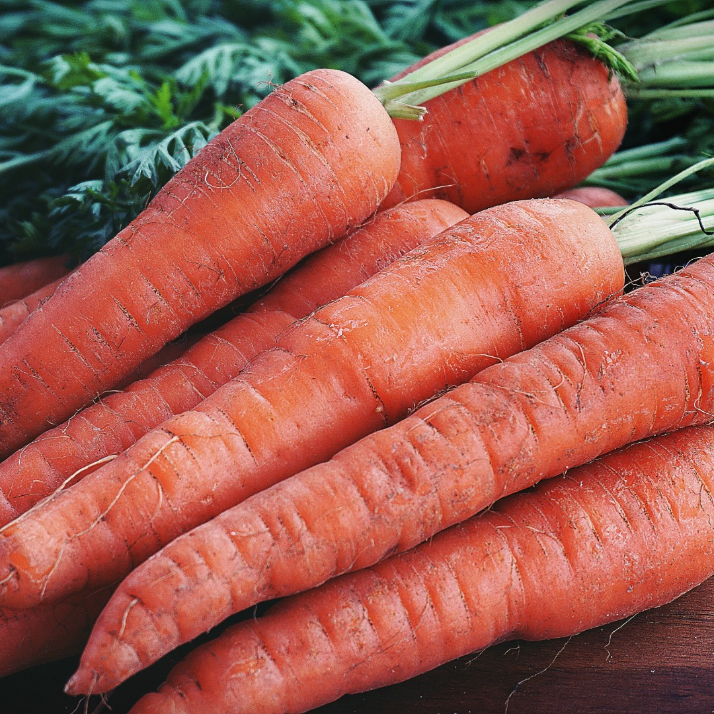
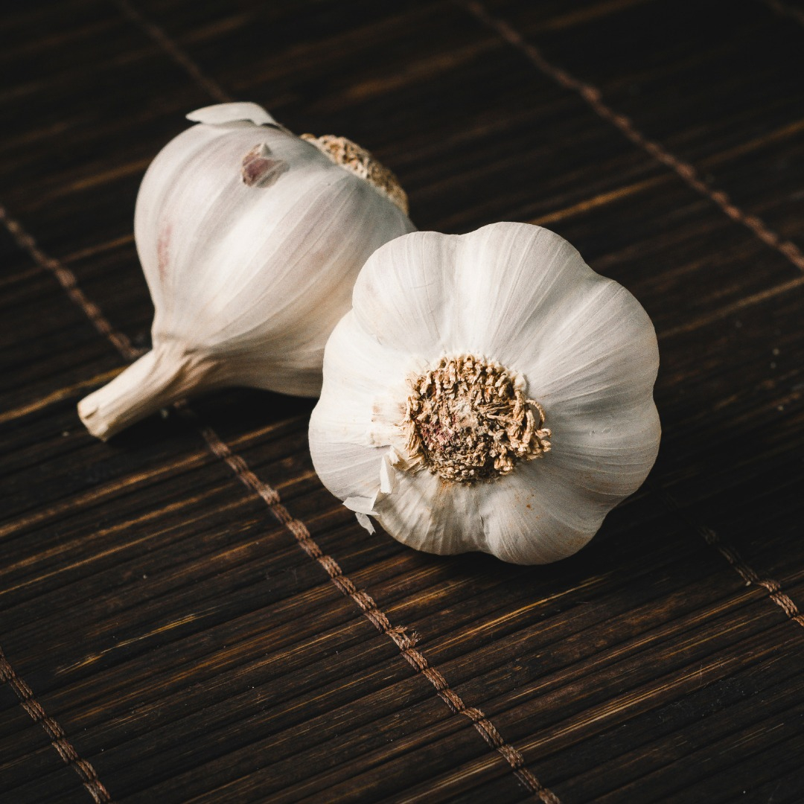
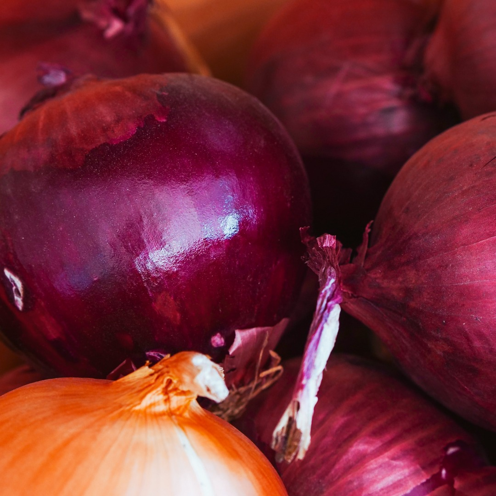
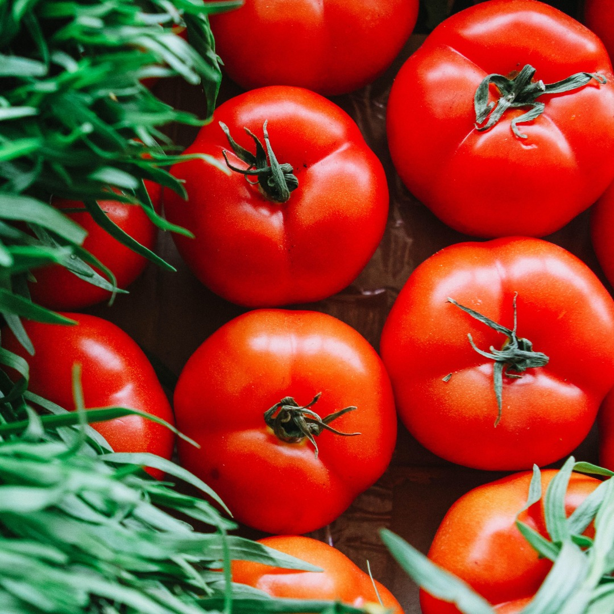
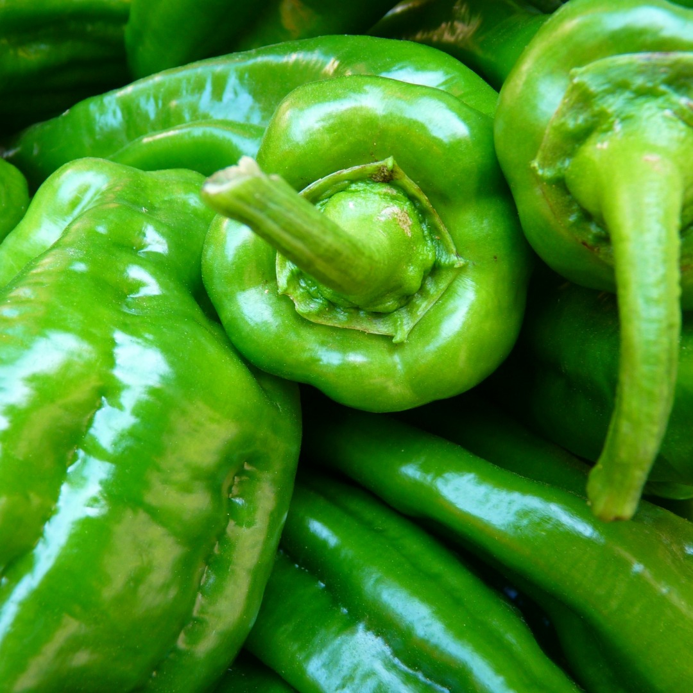

<!DOCTYPE html>
<html lang="en"></html>

<head>
    <meta charset="utf-8">
    <title>Homegrown - webshop</title>
    <link rel="stylesheet" href="styles.css">
    <link rel="preconnect" href="https://fonts.googleapis.com">
    <link rel="preconnect" href="https://fonts.gstatic.com" crossorigin>
    <link href="https://fonts.googleapis.com/css2?family=Mali&family=Open+Sans:ital,wght@0,300;1,300&family=Passions+Conflict&family=Permanent+Marker&family=Roboto:ital,wght@0,400;0,500;1,400&family=Rubik+Dirt&display=swap" rel="stylesheet">
</head>

<body>
<div class="menu">
    </a>
     <ul>
        <li><a href="#" class="hover-menu">about</a></li>
        <li><a href="#" class="hover-menu">shop</a></li>
        <li><a href="#" class="hover-menu">farm box</a></li>
     </ul>
</div>

<!--This is the blue banner-->

<div class="banner">
    <div class="banner-left"><h1>Say yes to fresh!</h1>
      <div class="fresh">We deliver seasonal fruit & veggies directly from our homestead to your doorstep. There are different types of boxes to choose from. Some fresh eggs or homemade jam in your box? No problem! Customize your farm box however you want. </div>
      <button class="button">Get started</button>
    </div>

<div class="container">
    
    <div class="overlay">
      <div class="text">Yes to fresh!</div>
    </div>
  </div>
</div>

<!--This is the white body-->

<h2>Our seasonal produce</h1>

  <div class="content">
    <div class="seasonal">
      
      <div class="middle">
        <div class="text">Carrots</div>
      </div>
    </div>
    
    <div class="seasonal">
        
        <div class="middle">
          <div class="text">Garlic</div>
        </div>
      </div>

    <div class="seasonal">
      
      <div class="middle">
        <div class="text">Onions</div>
      </div>
    </div>

    <div class="seasonal">
      
      <div class="middle">
        <div class="text">Pumpkins</div>
      </div>
    </div>

    <div class="seasonal">
      
      <div class="middle">
        <div class="text">Tomatoes</div>
      </div>
    </div>

    <div class="seasonal">
      
      <div class="middle">
        <div class="text">Peppers</div>
      </div>
    </div>

  </div>
  </div>

    <div class="testimonial">
        <div class="quote"><em>"Food may not be the answer to world peace, but it's a start."</div>
        <div class="author"><p><strong>- Anthony Bourdain -</strong></p></div>
    </div>

    <div class="modal-container">
    <div class="modal">
      <div class="calltext">  
       <div class="call">Support your local!</div>
        <div class="call-explainer">The support your local fund is a global initiative from the Farmers are Fabulous Foundation. By donating to the fund you support the local artisans in your region.</div>
      </div>
        <button class="button2"><a href="#">Donate</a></button>
      </div>
  </div>

    <div class="footer">
        <div class="copyright">Copyright &#169; The Odin Project 2021</div>
    </div>

</div>
 
</body>
</html>

</body>

</html>
